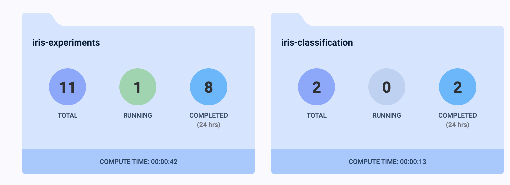
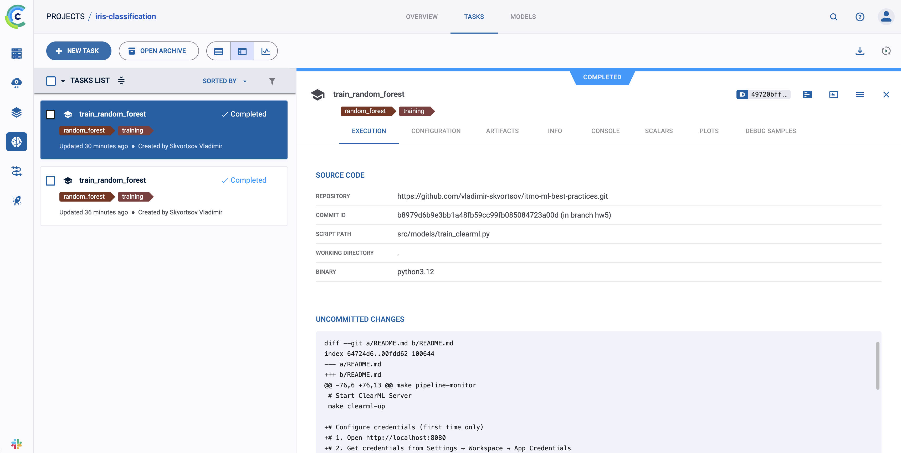
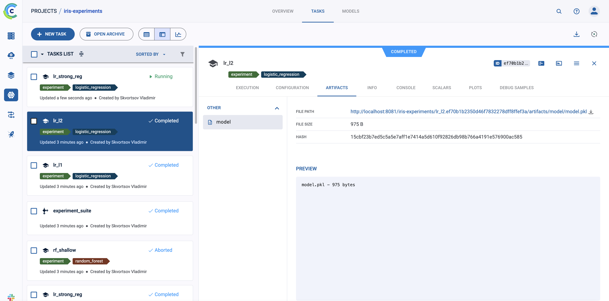

REPORT
Homework 5: ClearML MLOps Platform
1. Настройка ClearML
1.1 Установка ClearML Server
Создан docker-compose.clearml.yml с инфраструктурой:
- API Server (порт 8008)
- Web UI (порт 8080)
- File Server (порт 8081)
- MongoDB, Elasticsearch, Redis
- ClearML Agent
1.2 Конфигурация базы данных и хранилища
- MongoDB - метаданные экспериментов
- Elasticsearch - метрики и логи
- File Server - артефакты и модели
- Persistent volumes для всех данных
1.3 Создание проектов и аутентификация
Проекты: iris-classification, iris-experiments

Аутентификация через Web UI → Settings → App Credentials, сохранение в clearml.conf (не коммитится в Git).
1.4 Makefile команды
make clearml-up # Запуск сервера
make clearml-train # Обучение модели
make clearml-experiment # Серия экспериментов
make clearml-pipeline # ML pipeline
2. Трекинг экспериментов
2.1 Автоматическое логирование
Файл: src/models/train_clearml.py
Инициализация Task и логирование параметров:
task = Task.init(project_name="iris-classification", task_name=f"train_{model_type}")
task.connect({"model_type": model_type, "test_size": test_size, ...})

2.2 Логирование метрик и артефактов
Метрики: task.get_logger().report_single_value("test_accuracy", accuracy)
Confusion Matrix: task.get_logger().report_confusion_matrix(...)
Артефакты: task.upload_artifact("model", model_path)
2.3 Серия экспериментов
Файл: src/clearml_experiments/run_experiments.py
17 экспериментов: Logistic Regression (3 варианта), Random Forest (3), Gradient Boosting (3), SVM (3), KNN (2), Decision Tree, Naive Bayes, AdaBoost.
2.4 Система сравнения экспериментов
Parent Task для отслеживания серии, сбор результатов в DataFrame, сортировка по метрикам, загрузка в ClearML.
2.5 Дашборды
ClearML Web UI: графики метрик, confusion matrices, сравнение экспериментов.
3. Управление моделями
3.1 Регистрация и версионирование
Каждая модель автоматически загружается в ClearML через task.upload_artifact("model", model_path). Версионирование через уникальные Task ID.
3.2 Система метаданных
Хранится: параметры обучения, метрики производительности, артефакты (PKL, reports), метаданные выполнения (дата, Git commit, версии пакетов).

3.3 Автоматическое создание версий
При каждом запуске создается новый Task с уникальным ID, все артефакты привязываются к Task. Автоматическое отслеживание изменений через Git integration.
3.4 Сравнение версий моделей
В Web UI: сортировка по метрикам, parallel coordinates plot, scatter plots. Программно через Task.get_tasks().
4. Пайплайны
4.1 Создание ClearML Pipeline
Файл: src/clearml_pipelines/iris_pipeline.py
7-шаговый pipeline:
- Data Preparation 2-5. Parallel training (LR, RF, GB, SVM)
- Compare Models
- Deploy Best Model
4.2 Автоматический запуск
Запуск через make clearml-pipeline. Поддержка manual trigger, scheduled execution, event-based triggers.
4.3 Мониторинг выполнения
Web UI показывает статус каждого шага, прогресс, логи, метрики, зависимости между шагами.
4.4 Уведомления
Настройка уведомлений для событий: pipeline started/completed/failed, step failed, metric threshold reached. Поддержка Email, Slack, Webhooks.